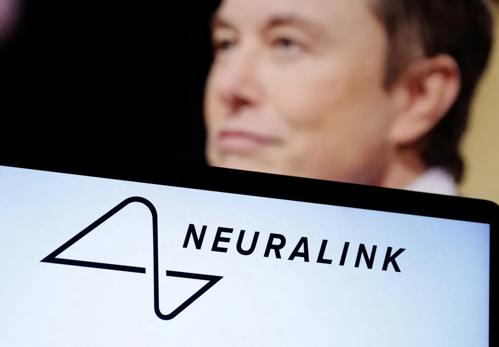

Elon Musk, dono da SpaceX, do X e da Tesla, também investe fundou empresa de chips cerebrais. Imagem retirada de g1.com
O bilionário Elon Musk quer implantar chips em pessoas com paralisia cerebral para que elas possam controlar objetos com o pensamento. Por meio de sua startup, a Starlink, ele anunciou a abertura das inscrições para pacientes interessados.
A empresa recebeu em maio o aval dos Estados Unidos para iniciar testes em humanos. Na terça-feira (19), foi a vez de um conselho independente dar o sinal verde para o recrutamento de participantes do estudo. A expectativa é de que a tecnologia tenha impactos transformadores na saúde.
Uso clínico dos chips
Musk apresentou a tecnologia Neuralink em 2019, mostrando um porco com um chip implantado no cérebro e um vídeo de um macaco jogando pong com a mente. Mas o potencial da tecnologia vai muito além de animais jogando.
Segundo Gallego, a tecnologia foi desenvolvida inicialmente para ajudar pessoas paralisadas por lesões na coluna ou condições como a síndrome do encarceramento – quando um paciente está totalmente consciente, mas não consegue mover nenhuma parte do corpo, exceto os olhos – a se comunicar.
Elon Musk é dono da Neurolink, startup de chips cerebrais — Foto: Reuters/Dado Ruvic Imagem retirada de g1.com
Mais informações sobre a notícia podem ser encontradas aqui.